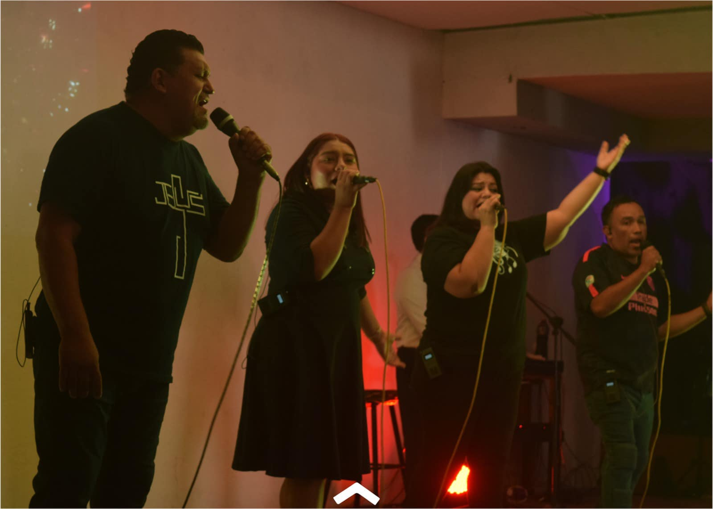

Banda
Una banda cristiana dedicada a glorificar a Dios a través de la música. Inspirados por Su amor, buscamos conectar corazones y avivar la fe en cada adoración.
Ver más sobre "La Banda"Josafat Pérez
Somos una comunidad en crecimiento que anhela conocer a Dios y reflejar Su amor y devoción por Jesús. Nuestra misión es honrar a Dios al guiar a otros hacia Jesús e integrarlos en una familia de discípulos y amigos. Diseñamos espacios donde mostramos el carácter de Cristo, promoviendo un caminar maduro y alineado con el propósito de Dios para nuestras vidas y familias.
Servir a Dios es un llamado profundo que transforma vidas y nos invita a vivir con propósito, amor y dedicación. Al servirle, no solo seguimos su ejemplo, sino que también impactamos a otros con su gracia y misericordia, construyendo una comunidad unida en fe.
Más informacion para servidoresLos Tiempos de Oración son momentos especiales dedicados a la conexión profunda con Dios, donde nos unimos en fe, buscando Su guía, fortaleza y paz. En nuestra iglesia, invitamos a cada miembro a participar activamente en estos tiempos, experimentando el poder transformador de la oración colectiva y personal.
Peticiones de oraciónEl Domingo del Señor es un tiempo de encuentro y adoración en comunidad, donde nos reunimos para celebrar la resurrección de Jesús, escuchar su palabra y renovar nuestra fe. Es un día de esperanza, alabanza y reflexión, donde juntos experimentamos el amor y la gracia de Dios. ¡Te invitamos a ser parte de esta experiencia espiritual única!.
Ver predicaciones en vivoUna banda cristiana dedicada a glorificar a Dios a través de la música. Inspirados por Su amor, buscamos conectar corazones y avivar la fe en cada adoración.
Ver más sobre "La Banda"IgleKids es un espacio lleno de amor y diversión donde los niños descubren más sobre Jesús, fortalecen su fe y forman valores cristianos a través de actividades dinámicas y enseñanzas creativas.
Ver más sobre "Iglekids"Es un espacio lleno de inspiración y fe, donde personas comparten sus testimonios de vida, entrevistas impactantes y momentos de reflexión. ¡Descubre cómo Dios transforma vidas y fortalece corazones!
Ver más sobre "Es temprano ya llegué"